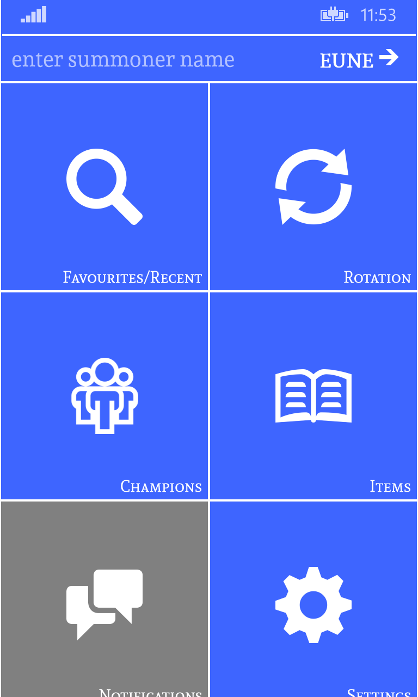
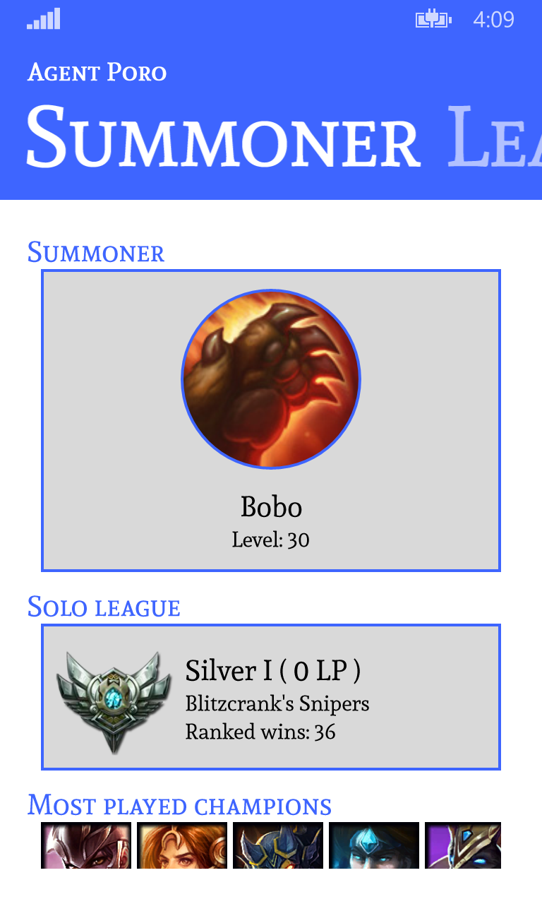
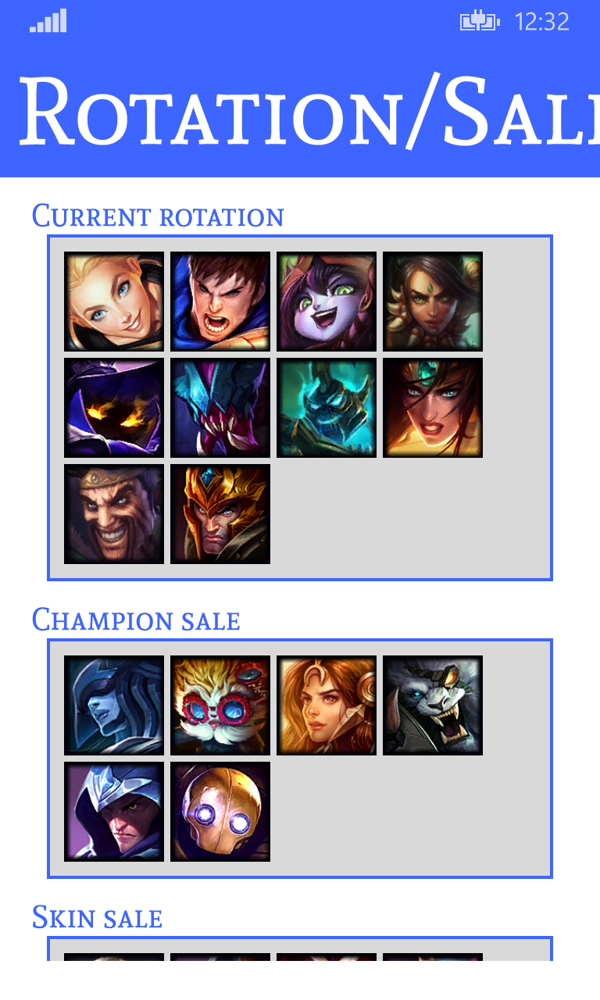
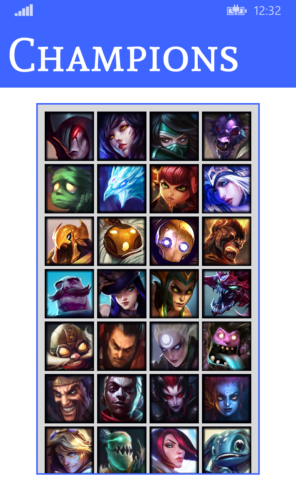
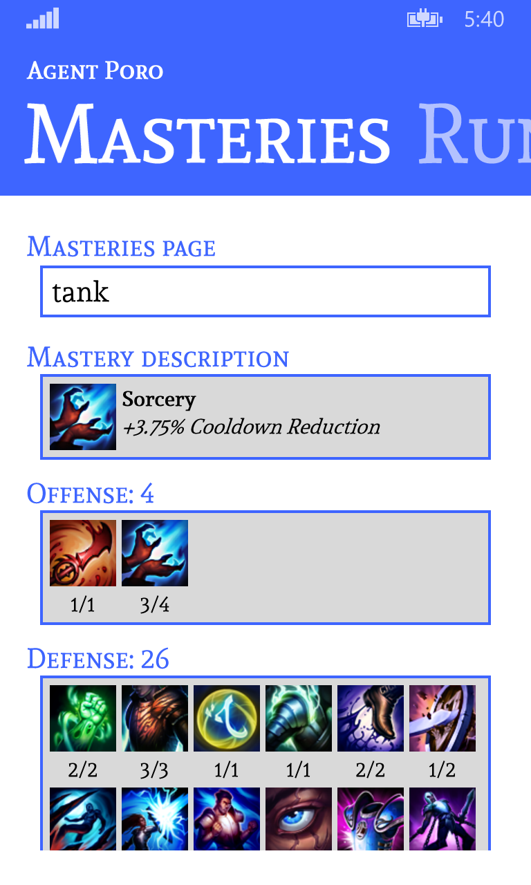
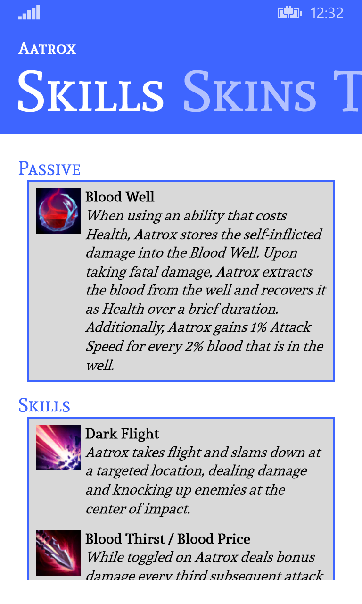
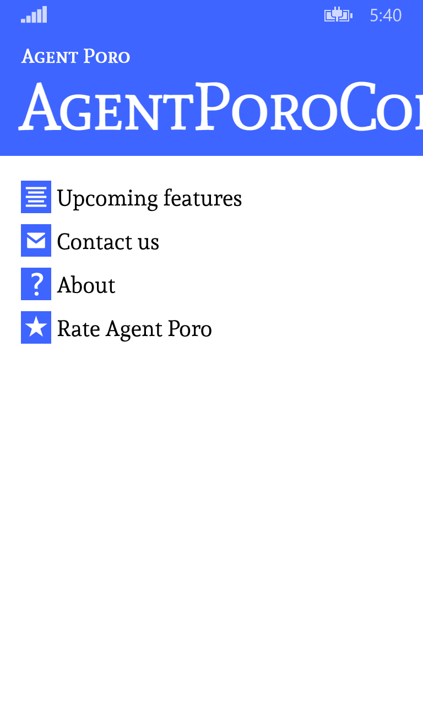

About App
Agent Poro is an app where you can check your League of Legends friends profile. You can view summoners overall statistics, leagues, ranked stats, last games, mastery and rune pages. Just simply choose server from list, type your League of Legends friend nickame and tap enter!
Screenshots:
      Contact
wpporo@hotmail.com
Upcoming features:
At this moment application allows only to show flat info about summoner. We are going to add new features like mentioned below: - More informations about user ranked and unranked statistics - More informations about summoner leagues - More informations about user recent games - Ability to browse LoL static data - Ability to check summoner current game - Ability to customize theme colors - Add languages Contact us what would you like to see first :-) We will do first what users will want. We have much more great ideas how to make Agent Poro better and we will place info about them in upcoming patches.